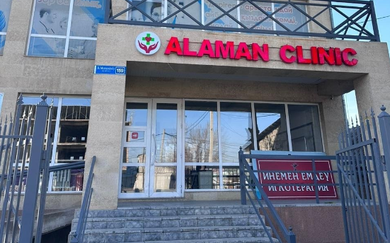
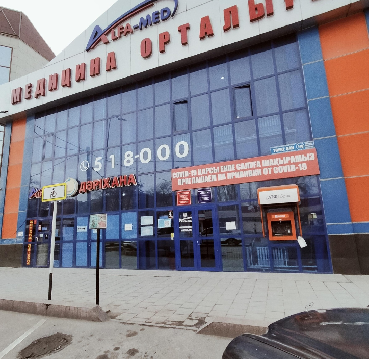
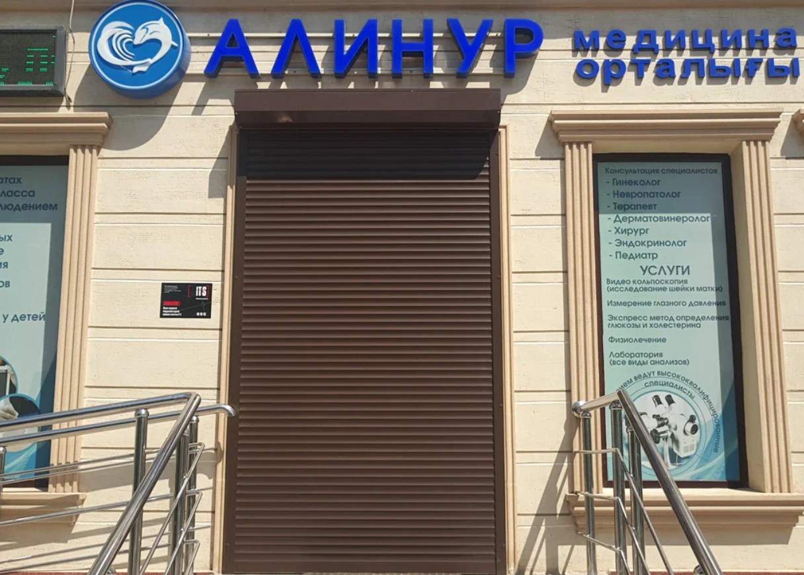
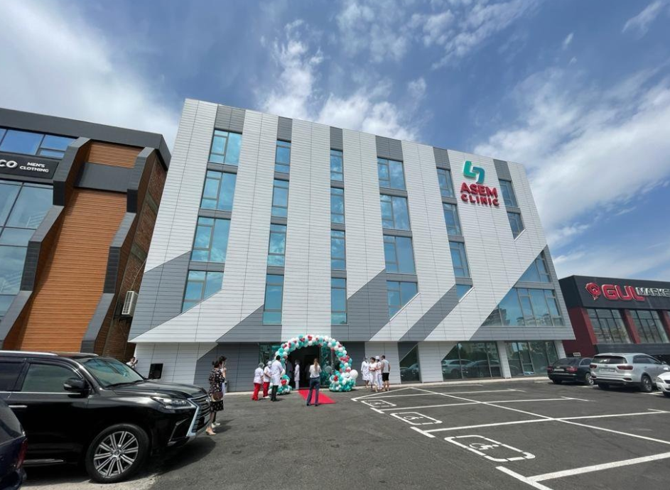
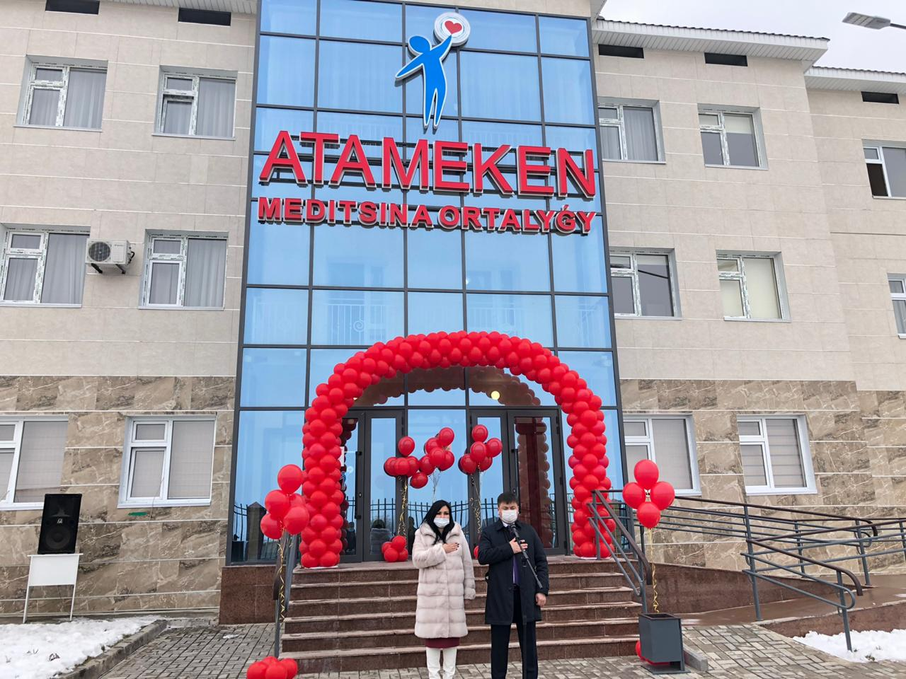
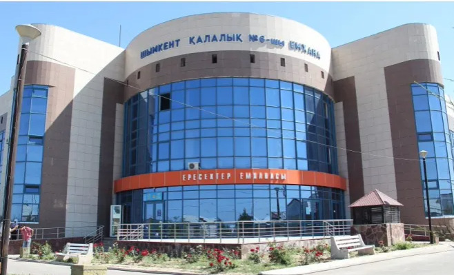

Alaman
Поликлиника Alaman Clinic - это современное медицинское учреждение, где здоровье
пациентов стоит в центре внимания. Мы предлагаем широкий спектр медицинских услуг
высокого качества, обеспечивая индивидуальный подход и заботу для каждого пациента. Наша
команда состоит из опытных специалистов, готовых оказать квалифицированную помощь и
профессиональный уход. Alaman Clinic стремится предоставить пациентам не только
медицинскую помощь, но и уютную атмосферу и чувство комфорта во время посещения.
Адрес: проспект Бауыржана Момышулы 159 | Телефон: +7 702 980 58 36

AlfaMed
Поликлиника Alfamed - это современный медицинский центр, предоставляющий широкий спектр
медицинских услуг высокого качества. Наша цель - забота о здоровье пациентов через
профессиональную медицинскую помощь и персонализированный подход. Наша команда состоит
из опытных врачей и медицинских специалистов, готовых оказать профессиональную помощь и
поддержку. Alphamed стремится предоставить пациентам не только медицинское обслуживание,
но и теплую и заботливую атмосферу во время посещения.
Адрес: Проспект Тауке Хана 146 | Телефон: +7 707 351 80 00

Alinur
Поликлиника Alinur Clinic - это современное медицинское учреждение, где забота о здоровье
пациентов играет важнейшую роль. Мы предлагаем широкий спектр медицинских услуг высокого
качества, обеспечивая индивидуальный подход и заботу для каждого пациента. Наша команда
состоит из опытных врачей и медицинских специалистов, готовых предоставить
квалифицированную медицинскую помощь и профессиональный уход. В Alinur Clinic мы
стремимся обеспечить пациентам не только медицинское обслуживание, но и теплую и
поддерживающую атмосферу во время каждого визита.
Адрес: мкр Нурсат 105 | Телефон: +7 778 311 45 59

Asem Clinic
Поликлиника Asem Clinic - это современное медицинское учреждение, где забота о пациентах
является приоритетом. Мы предлагаем широкий спектр медицинских услуг высокого качества,
обеспечивая индивидуальный подход и заботу для каждого пациента. Наша команда состоит из
опытных врачей и медицинских специалистов, готовых предоставить квалифицированную
медицинскую помощь и профессиональный уход. В Asem Clinic мы стремимся создать
комфортную и поддерживающую атмосферу для каждого пациента, обеспечивая не только
качественное лечение, но и заботу о вашем здоровье во всех аспектах.
Адрес: Проспект Байдибек Би 125 | Телефон: +7 775 007 10 35

Atameken
Медицинский центр Atameken - это передовой медицинский комплекс, где забота о вашем
здоровье становится первостепенной задачей. Мы предоставляем широкий спектр медицинских
услуг высокого качества, включая консультации ведущих специалистов, современные методы
диагностики и качественное лечение. Наш профессиональный коллектив состоит из опытных
врачей и специалистов, готовых обеспечить индивидуальный и заботливый подход к каждому
пациенту. В медицинском центре Atameken мы стремимся к оказанию высококлассной
медицинской помощи, поддерживая теплую и доверительную атмосферу для каждого посетителя.
Адрес: Проспект Байдибек Би 12 | Телефон: +7 701 099 01 11

Поликлиника №6
Государственная поликлиника номер 6 - это медицинское учреждение, оказывающее медицинские
услуги населению. Мы предоставляем широкий спектр медицинской помощи, включая
профилактические осмотры, консультации специалистов и лечение различных заболеваний.
Наша цель - обеспечить доступную и качественную медицинскую помощь для всех категорий
пациентов. Квалифицированный персонал поликлиники номер 6 готов предоставить необходимую
медицинскую помощь с заботой и вниманием к каждому пациенту.
Адрес: ул. Аль-Фараби 230 | Телефон: +7 7252 395489